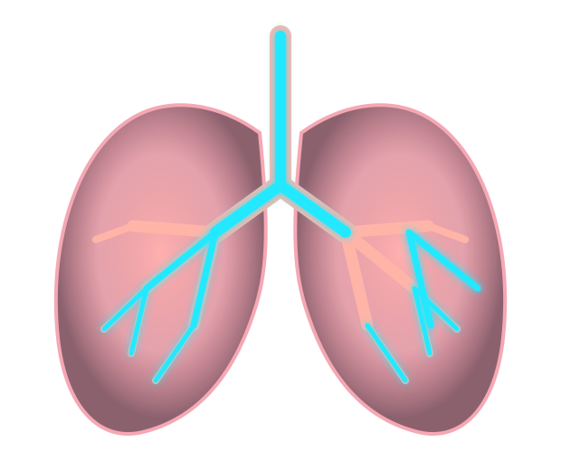

0.0Sekunden
Gesamtzeit00:00Zyklen0Zielzeit10:00
Individuell

Atemzeiten festlegen
Stelle deine persönlichen Atemzeiten und die Trainingsdauer ein.
Einatemzeit4Sek.
Ausatemzeit5Sek.
Trainingsdauer10Min.
Atem-Check
Überprüfe deinen natürlichen Atemrhythmus. Nicht bewusst langsamer atmen – einfach normal und entspannt atmen.
Individuell3Min.
Restzeit03:00
Atemzüge0PhaseBereitVerstrichen00:00
✓
Atem-Check abgeschlossen
Atemfrequenz–Ø Einatmen–Ø Ausatmen–Ein/Aus–Rhythmus-Stabilität–Trend–
Dein Verlauf
Logbuch
Deine Tauchgänge und RMV-Werte bleiben lokal auf diesem Gerät gespeichert.
Fortschritt
Deine Trainings- und Atem-Check-Werte werden lokal gespeichert.